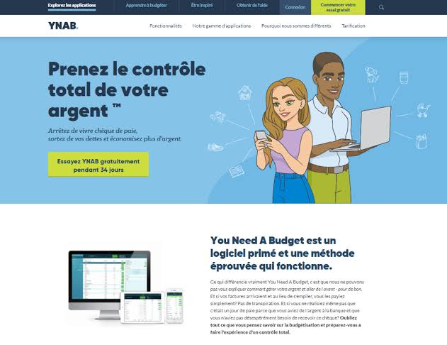

Projet : Déploiement d'une infrastructure web sécurisée - Cas YNAB
Dans le cadre de mon projet d'infrastructure, j'ai conçu et déployé de A à Z une plateforme web de type SaaS (exemple YNAB - gestion de budget). J'ai pris en charge l'ensemble du cycle : création de l'environnement virtualisé, configuration réseau, installation et hardening du serveur Linux, déploiement du site, mise en place du HTTPS et de la supervision. Objectif : livrer une solution disponible, performante et sécurisée, conforme aux bonnes pratiques de cybersécurité.
Voir le projet